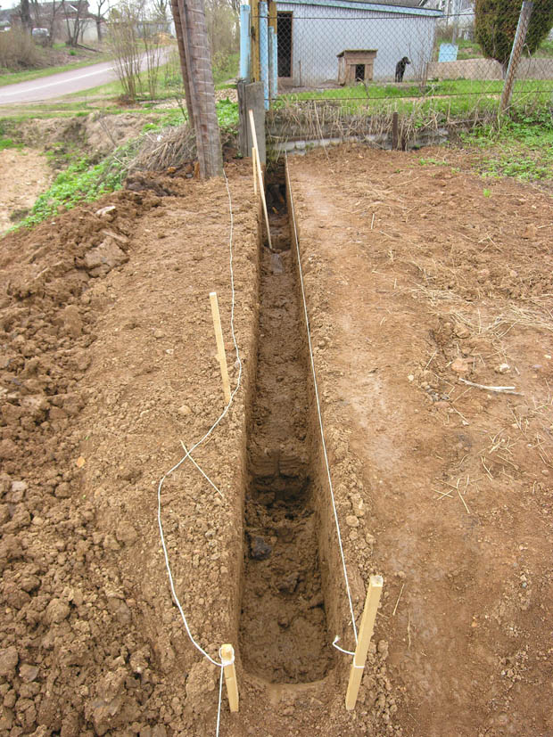
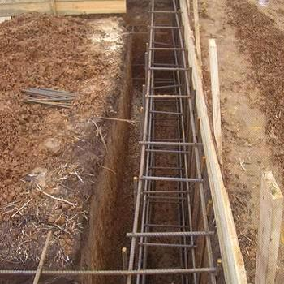

Многие собственники загородных домов и дачных участков задаются вопросом, как сэкономить деньги при монтаже забора. Ограждение должно быть недорогим, эстетичным и конструктивно надежным. Существует несколько материалов для возведения конструкций, соответствующих...
Подробнее...Чтобы ограждение из профилированных листов было долговечным, требуется соблюдать ряд требований. При самостоятельной установке практически невозможно получить качественный забор. Только профессионалы знают все нюансы выполнения монтажных работ. Основные этапы монтажа: Планирование. Измеряется...
Подробнее...Чтобы построить надежное и долговечное ограждение, необходим фундамент для забора. Создание прочного основания позволит избежать перекоса конструкции. Течение времени также не повлияет на эксплуатационные характеристики и внешний вид постройки. Как показывает практика,...
Подробнее...Чтобы построить надежное и долговечное ограждение, необходим фундамент для забора. Создание прочного основания позволит избежать перекоса конструкции. Течение времени также не повлияет на эксплуатационные характеристики и внешний вид постройки.
Как показывает практика, заборы, установленные без фундамента на нестабильных почвах, требуют обслуживания практически каждый год. Это обуславливается сезонными колебаниями грунта. Размещение ограждений на прочных основаниях позволяет избежать лишних затрат.
Рассмотрим, какие бывают фундаменты для заборов и какой тип основания лучше выбрать для возведения конструкций с максимальным запасом прочности.
Выделяют два основных вида оснований для ограждений.
1. Точечные. Фундаменты этого типа предполагают укрепление исключительно самих опор. Строительство таких оснований актуально при возведении легких заборов из дерева, сетки-рабицы или профнастила с металлическими столбами. Каждая опора помещается в отдельное углубление. На дно отверстий укладывается песчано-гравийная подушка.
2. Металлические столбы устанавливаются строго вертикально. При необходимости для дополнительного укрепления конструкции в полостях размещается арматура. После этого углубления заливаются бетоном.
Монолитно-ленточные. Основания этого типа чаще всего строятся при возведении массивных ограждений с кирпичными столбами. Секции могут быть деревянными или металлическими (в том числе коваными).
Ленточный фундамент под забор — это гарантия надежности и долговечности ограждения. Конструкция не потребует дополнительного ухода и будет отлично противостоять воздействиям агрессивных сред и сезонным колебаниям грунта.
Основания этого типа могут использоваться не только для возведения кирпичных построек, но и для придания прочности и устойчивости более легким сооружениям на нестабильных почвах.
Ленточные фундаменты выбирают владельцы недвижимости, желающие сэкономить на обслуживании заборов в будущем. Изделия долгие годы сохраняют презентабельный внешний вид.
Строительство заборов на ленточном фундаменте
Ленточный фундамент для забора — это монолитная бетонная конструкция. Ее ширина — 250–400 мм. Глубина установки — 500–600 мм. Основание возводится по периметру будущего ограждения.
Строительство ленточного фундамента включает в себя несколько этапов.
1. По периметру будущего забора выкапывается траншея. Ширина котлована должна превышать значение планируемой ширины фундамента на 200 мм. Глубина определяется в зависимости от массы ограждения и обычно колеблется в переделах от 700 до 800 мм.
2. Дно траншеи засыпается слоем песка (толщина —100 мм). Его смачивают водой и тщательно утрамбовывают. Сверху размещается подушка из щебня (100 мм). Она также подвергается уплотнению.
 3. Для установки столбов подготавливаются специальные отверстия. Они выполняются по периметру траншеи на одинаковом расстоянии друг от друга (250–300 мм). В основания углублений засыпается слой песка. Поверхность утрамбовывается.
4. Изготавливается опалубка из гладких тонких досок или листов фанеры. Вспомогательные конструкции закрепляются распорками и тщательно выравниваются.
5. Для дополнительной прочности по периметру траншеи размещаются металлокаркас и арматура. Используются стандартные прутья (диаметр — 8 мм). Благодаря такому дополнительному укреплению, фундамент не деформируется даже при неравномерных нагрузках.
 6. Устанавливаются столбы. До фиксации они чистятся, грунтуются и покрываются краской. Сверху размещаются заглушки.
7. Проверяется правильность расположения опор. Столбы должны стоять строго вертикально для получения идеально ровных кирпичных конструкций и промежуточных секций.
8. Выполняется заливка бетона. Раствор размещается по всему периметру траншеи слоями толщиной в 200 мм. Каждый из них тщательно утрамбовывается.
После затвердевания бетона приступают к установке секций или к возведению кирпичных столбов, на которые для защиты надеваются специальные колпаки.
Советы профессионалов
Перед началом строительства необходимо выполнить как можно более точный расчет фундамента, т. к. на эксплуатационные характеристики ограждений влияют несколько важных факторов. Среди них:
климатические условия конкретной местности;
особенности грунта на территории участка;
тип возводимого забора.
Как показывает практика, многие владельцы недвижимости, установившие заборы самостоятельно, ошибаются в расчетах и забывают о необходимости строительства отмостки. Это приводит к быстрому выходу из строя сооружений.
Если вы не уверены в своих способностях, обратитесь к профессионалам. Высококвалифицированные специалисты изготовят качественный ленточный фундамент под забор, цена работы оправдает себя. Ограждение не потребует обслуживания и ремонта.
Как сделать отмостку для забора
Отмостка для забора — это проходящий вдоль всей линии ограждения наклонный бетонный порожек. Он служит для защиты фундамента от дождей и талой воды.
Лучшим решением станет строительство порожка специалистами еще на этапе заливки раствора. Это позволит избежать контакта основания с влагой и продлит срок его службы.
Для сооружения отмостки:
1. Делается углубление вдоль всей ленты фундамента. Глубина — 150 мм, ширина — 500 мм. Дно засыпается щебнем (фракция — до 20 мм) и тщательно утрамбовывается.
2. Из арматурного каркаса основания в выкопанную полость выпускаются прутья. Они должны располагаться чуть выше слоя щебня. Под арматуру помещается пленочный рубероид.
3. Вдоль внешней грани будущей отмостки делается опалубка. Используются доски или фанера.
4. Заливается ровный наклонный порожек.
Выполненные по всем правилам заборы на ленточных фундаментах сохраняют презентабельный внешний вид десятки лет и надежно служат своим хозяевам.
+7(968) 370-50-05 и +7(916) 743-49-83